第二章 – 行前準備 – 編程環境配置

本文所提供之連結
文章內所附的連結皆以通過掃毒軟體(Kaspersky)檢查，請安心服用。
前言
每當航船即將啟航，船員們不會立即把錨升起、風帆揚起。他們首先確保船上的一切都已妥善，從儀器到補給，一切都已就緒。編程亦如此。在我們踏上編碼的旅程前，我們需要的不是驚人的想法或者複雜的演算法，而是一個完善且適合的編程環境，這就像是我們的航海圖與羅盤。
設定編程環境可能看似只是小溪邊的石子，但對初學者來說，這卻可能是前進的絆腳石。而對於熟悉的開發者，即使他們已經乘風破浪，但在嘗試新的海域時，良好的行前準備也是不可或缺的。
在這一章，我們將帶領你航過這片編程的海洋，教你如何挑選最鋒利的航海刀、安裝最完美的船帆，以及設定你的第一個航路。無論你是新船員還是資深的航海家，我都期望這篇指南能為你指明方向，讓你的旅程更加順利。
在我開始分享前，我想與各位分享我學習的方式。我不僅偏好嚴格按照書本的指導進行學習，當遇到書中未詳述的部分，我會主動進行深入的探索。這樣的學習過程就像心智圖，從一個中心思想不斷地向外擴展，無止境地探索。因為人腦對有連接的信息更容易記憶，這種學習策略使我能夠將知識串連起來。如此一來，在這無邊無際的知識海中，每一筆知識不再是孤立且彼此毫無瓜葛的魚，而是形成了一個繁盛且息息相關的生態體系。因此，在未來的文章中，只要有額外能延伸的知識點，會將該知識點粗體化，並在該段落下方使用筆記延伸該知識點。如果在該知識點有什麼需要注意的，我也會將該知識點粗體化，並在段落下方使用警告來提醒諸位讀者該注意的事項。
這是一個筆記的例子
未來的文章中，只要有額外能延伸的知識點，會將該知識點粗體化，並使用此格式來延伸該知識點。
這是一個警告的例子
如果在該知識點有什麼需要注意的，我也會將該知識點粗體化，並用此格式來提醒諸位讀者該注意的事項。
準備好了嗎？讓我們一起開始準備行前的裝備吧!
準備清單
-
電腦與個人配置最低需求
- Windows 10 以上
- CPU Intel i5 以上
- 至少 8 GB RAM
- 至少 500 GB 儲存空間
- 基本電腦使用能力 (包含如何使用Google尋找資料、下載檔案、執行檔案)
-
編程環境
- MSYS2 (軟體發布平台，用來下載編譯器)
- Visual Studio Code (文字編輯器)
MSYS2 (Minimal System 2, 用於Windows的軟體發布平台)
C++屬於編譯語言，意味著當你寫了一段程式碼後，你需要使用一個「編譯器」來將你的原始碼轉換成機器碼，這個轉換過程被稱為「編譯」。完成編譯後，你會得到一個可執行的檔案，然後你可以直接運行這個檔案，而不需要原始的程式碼。
編譯語言 (Compiled Language)
編譯語言是一種常見的程式語言執行方式，另一種常見的是 "直譯語言"。
- 原始碼在執行前需要透過一個編譯器完整地且一次性轉換成機器碼。這個轉換過程是單一次性的，之後可以多次執行這個機器碼而不需再次編譯。
- 優點是速度快，因為已預先轉為機器碼；缺點是平台依賴，必須為每個平台編譯。
- C和C++是典型的編譯語言。
直譯語言 (Interpreted Language)
直譯語言是另一種常見的程式語言執行方式。
- 不需要事先編譯，而是在執行時由直譯器一行一行地解讀和執行。
- 優點是跨平台，寫一次可以在多個平台上執行；缺點是速度較慢，因為實時解讀和執行源碼。
- Python和JavaScript是直譯語言的例子。
編譯器 (Compiler) & 編譯 (Compile)
一種特殊的軟體 (編譯器不是什麼特別的硬體，它是軟體!)。
- 主要功能是為一種語言（通常是高階程式語言，例如C++、C#···等）翻譯成另一種語言（通常是低階的機器語言或組合語言）。
- 當開發者使用高階語言撰寫程式時，該程式是人類可讀的，但機器無法直接執行。這時，編譯器就扮演了橋樑的角色，將人類可讀的程式碼轉換成機器可以理解和執行的代碼。這一轉換過程稱為「編譯」。編譯過程完成後，輸出的結果是機器語言代碼或稱為執行檔，可以在特定的硬體平台上運行。
- C++編譯器常見的有MinGW/GCC、Clang、Microsoft Visual C++。
- 相對於編譯器，還有一種稱為「直譯器」的工具，它會逐行解釋和執行程式碼，而不是先進行完整的轉換。
原始碼 (Source Code)
最簡單的來說，所有你用C++···等高階語言寫的程式碼都是原始碼。以下為比較完整的解釋:
- 程式設計中用來描述和實現功能的文字指令。這些指令是按照某一程式語言的語法規則寫成的。當你寫一個應用程式或網站時，你實際上是在撰寫原始碼。
- 一旦這些原始碼完成，它們會被編譯或解釋成電腦能夠執行的指令。想像原始碼像是一本食譜，電腦就像廚師，按照食譜的指示來製作菜餚。
- 透過閱讀和學習原始碼，我們可以理解程式是如何工作的，也可以對其進行修改和優化。
機器碼 (Machine Code )
電腦的基本語言，直接被中央處理器（CPU）解讀與執行，由0和1組成。
- 當你寫一段程式碼(原始碼)後，透過編譯器或直譯器轉換，該程式就被轉化為機器碼。
- 機器碼是二進位的，由0和1組成，代表具體的指令。
- 人類難以直接閱讀或編寫機器碼，所以我們通常使用較高階的語言來編程，再由工具轉為機器碼。但機器碼是電腦運作的核心，因為它是直接和硬體溝通的語言。
可執行檔案 (Executable File)
電腦上的一種特殊檔案，它包含了一組電腦可以直接執行的指令。當你雙擊或運行這個檔案時，電腦會按照檔案中的指令操作。
- 想像你寫了一個食譜，可執行檔就像是可以自己煮菜的機器人，它根據食譜完成煮食。
- 程式設計中，我們先寫程式碼（食譜），然後用特定的工具（例如編譯器）將其轉換為可執行檔案（機器人），使電腦能直接執行。
- 在Windows上，可執行檔案類型為 ".exe"。
組合語言 (Assembly Code)
一種接近計算機硬體的低級程式語言。與高階程式語言（如C++或Python）不同，組合語言為特定的計算機架構設計，直接對應於機器語言指令。
- 當你在組合語言中編寫程式時，你基本上是在告訴計算機進行非常具體的操作，例如將數據從一個記憶體位置移動到另一個位置或執行特定的算術運算。
- 由於它是那麼低階，它通常用於系統編程、嵌入式程式設計或其他需要與硬體直接交互的場合。
- 雖然組合語言允許開發人員進行細粒度的控制，但它也需要更多的工作和專業知識才能使用。
以下為使用組合語言寫出的Hello, world (我也看不懂，未來有興趣會學):
1
2
3
4
5
6
7
8
9
10
11
12
13
14
15
16
17
18
19
20data segment
msg db 'Hello World!','$'
data ends
code segment
assume cs:code, ds:data
start:
mov ax, data ;
mov ds, ax
lea dx, msg
mov ah, 09h
int 21h
mov ah, 4ch
int 21h
code ends
end start
(程式碼來源: 病毒開發(4) - 組合語言概述與超詳細ㄉHello World解釋)
補充了這麼多，各位讀者應該都知道編譯器是什麼了。接下來就是正式安裝啦!
- 前往MSYS2官網，並點擊Installation底下的下載點:
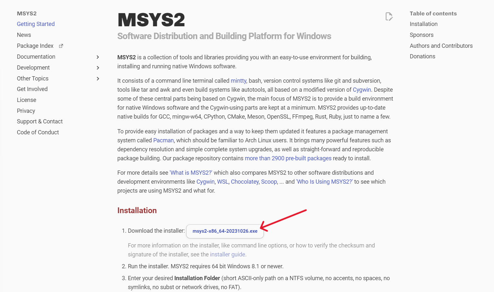
- 執行下載下來的安裝檔，並遵循安裝檔的步驟 (可以使用安裝檔預設的資料夾 “C:\msys64”，也可以自己建立新的資料夾):
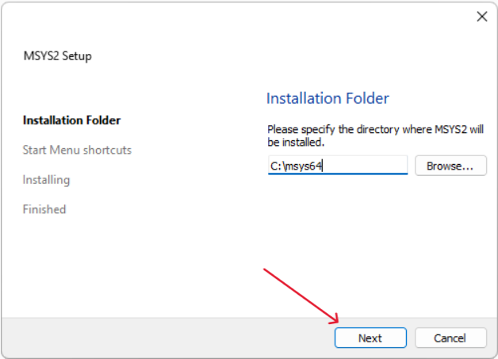
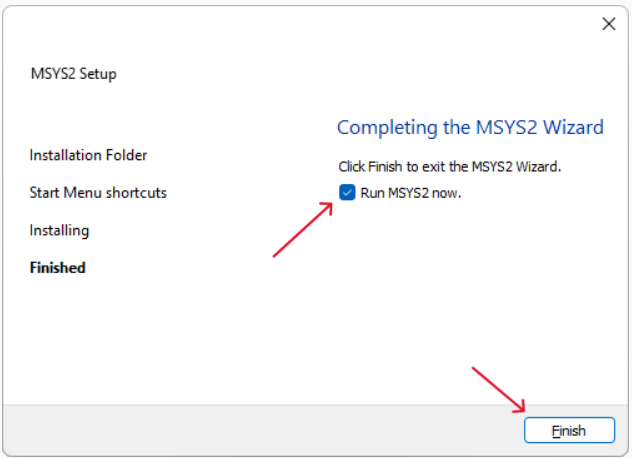
- 執行 “MSYS2 UCRT64” (如果剛剛安裝結束沒有自動執行，可以在開始→所有應用程式→MSYS2資料夾內找到):
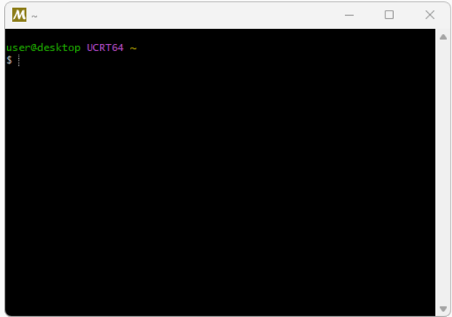
-
在 “MSYS2 UCRT64” 中打:
pacman -S mingw-w64-ucrt-x86_64-gcc(安裝Mingw/GCC)，並按Enter執行。
-
“MSYS2 UCRT64” 會出現以下畫面(可能會有一些出入)，出現後再按一次Enter:
1 | resolving dependencies... |
-
等待所有東西安裝完成後，再打
pacman -Sy(更新所有編譯器至最新版本)，並按下Enter執行。
如果它出現 “Proceed with installation? [Y/n]”，再按一次Enter來確認更新編譯器。
-
將剛剛下載的編譯器新增至Windows的環境變數的Path中:
(這樣你才可以在任何終端編譯你的C++原始碼，後面的文章會有更深入的解釋)
- 步驟:
搜尋 "環境變數"→點選 "編輯系統環境變數"→點選右下角的 "環境變數"→ "Path"點擊兩下→點擊右上角 "新增"→貼上以下路徑→貼上後點擊確認
路徑
路徑是一種電腦檔案或目錄的名稱的通用表現形式，它指向檔案系統上的一個唯一位置。
- 如果是使用剛剛安裝檔的預設路徑，則路徑會是 "C:\MSYS2\mingw64\bin"和 "C:\MSYS2\ucrt64\bin"
- 如果是使用自訂的路徑，則路徑會是 "<自訂路徑>\mingw64\bin"和 "<自訂路徑>\ucrt64\bin"


- 上述所有步驟都完成了，就可以打開Windows內建的終端 - Command Line (CMD):
- 步驟: 搜尋 "cmd"→點選命令提示字元

- 在終端內打:
g++ --version，並按Enter執行:

- 如果照著以上步驟，會出現以下畫面 (主要是 "g++ (…) 13.2.0"那行)，就表示成功了!
(PS. 如果失敗的話，請在底下留言，或IG私訊我詢問)

Visual Studio Code (VSCode, 文字編輯器)
文字編輯器 (Text Editor)
一個讓使用者能夠創建、編輯和查看純文字檔案的軟體工具。不像文字處理器（例如Word）那樣有格式化功能，它主要用於編輯純文字。
對程式設計師來說，文字編輯器是一個非常重要的工具，因為程式碼通常都是純文字。有些文字編輯器，例如infopad++或Sublime，特別為編程設計，包含了語法高亮、程式碼自動完成等功能。選擇一個適合的文字編輯器，能夠使編碼過程更加順暢和高效。這次除了安裝VSCode本體與必要的擴充功能以外，我還會推薦一些我個人認為非常好用的擴充功能。各位如果有認為非常好用，但我沒有提到的，歡迎在下面留言!
- 前往VSCode官方網站，並點擊 “Download for Windows”:
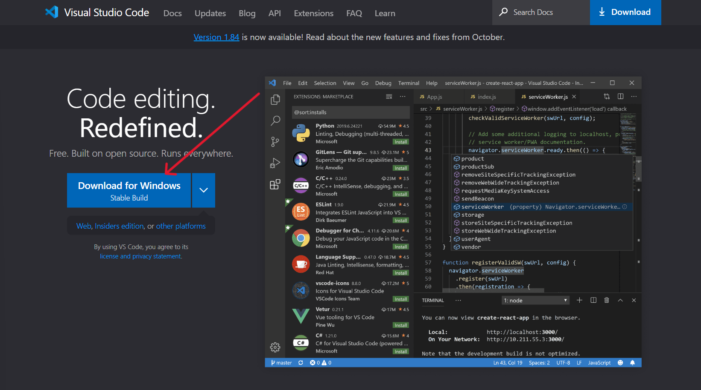
- 執行下載下來的安裝檔，並遵循安裝檔的步驟 (請確認第二步的第四項與第五項有打勾):


- 打開剛剛載下來的VSCode，並點擊左邊的延伸模組，搜尋以下延伸模組並點擊安裝:
-
必要的擴充功能
- Better C++ Syntax (好看很多的C++語法高亮)
- C/C++ Extension Pack (在VSCode編輯C++必要的擴充功能，包含基本語法高量、編輯與除錯(Debug))
-
推薦的擴充功能
- Code Spell Checker (拼字檢查)
- Material Icon Theme (為文件與資料夾增加小圖示)
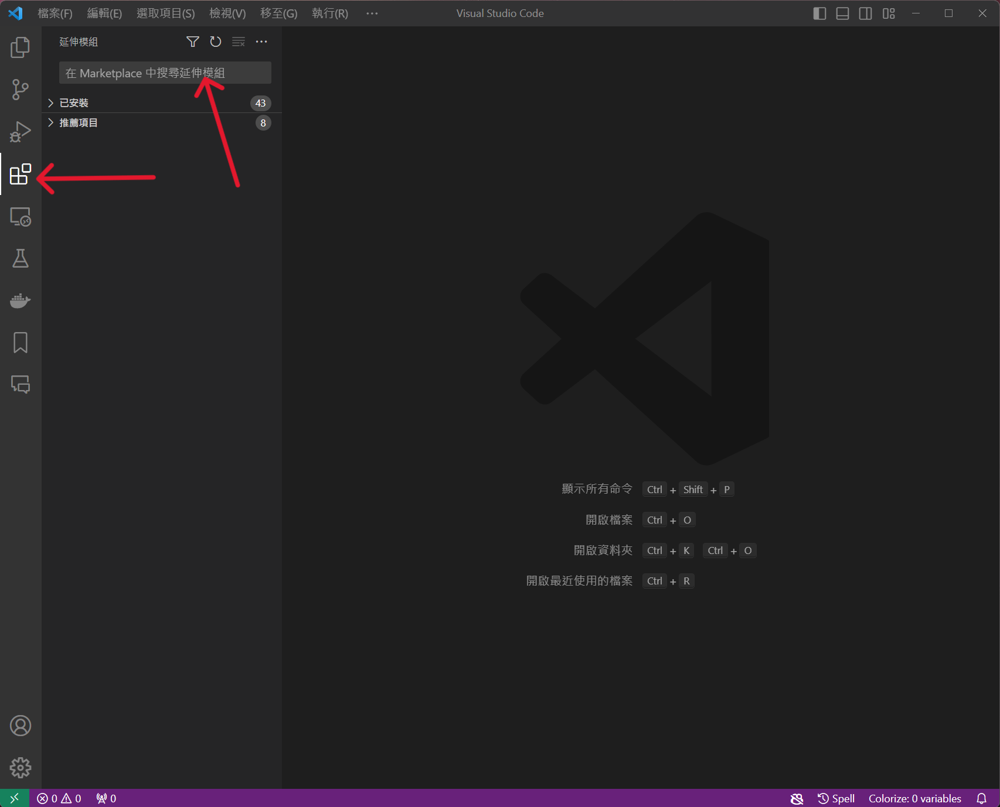
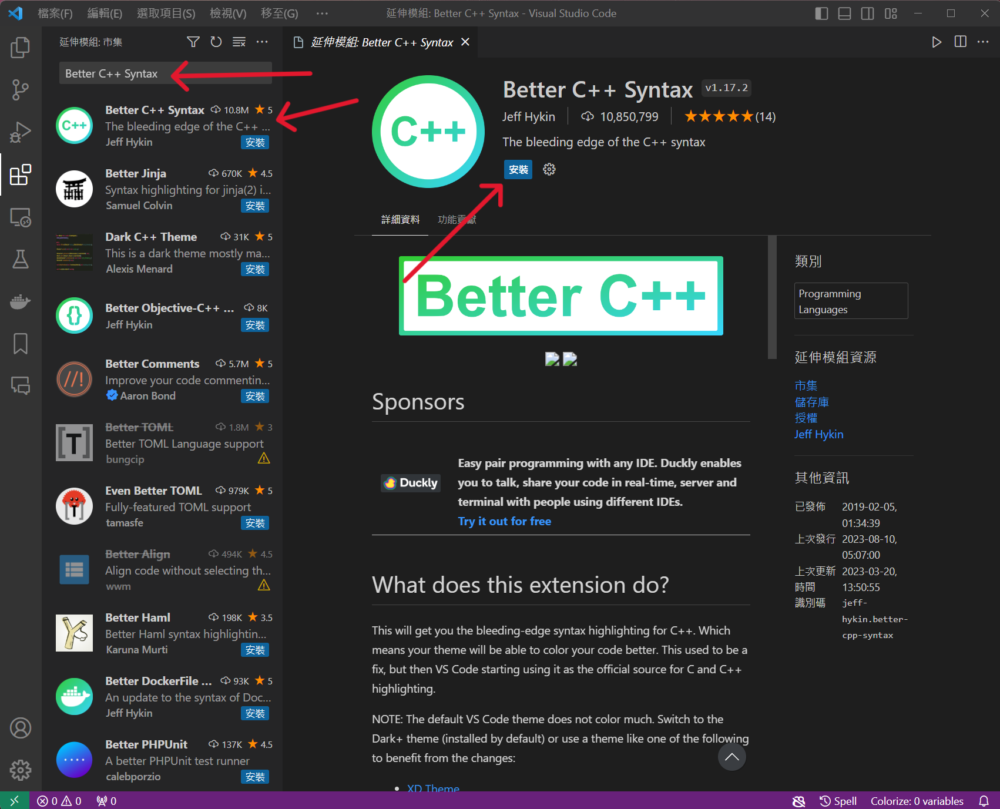
嘗試第一個C++程式
準備工作從來都是最無趣的，但準備的愈萬無一失，旅程就會愈一帆風順。在做完準備工作後，我們就來寫第一個程式吧!
- 在桌面新增一個專門儲存程式的資料夾:
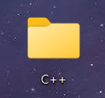
- 打開VSCode，點擊左上角 "檔案"→點擊 "開啟資料夾"→找到剛剛建立的資料夾→選擇資料夾並點擊右下角 “選擇資料夾”
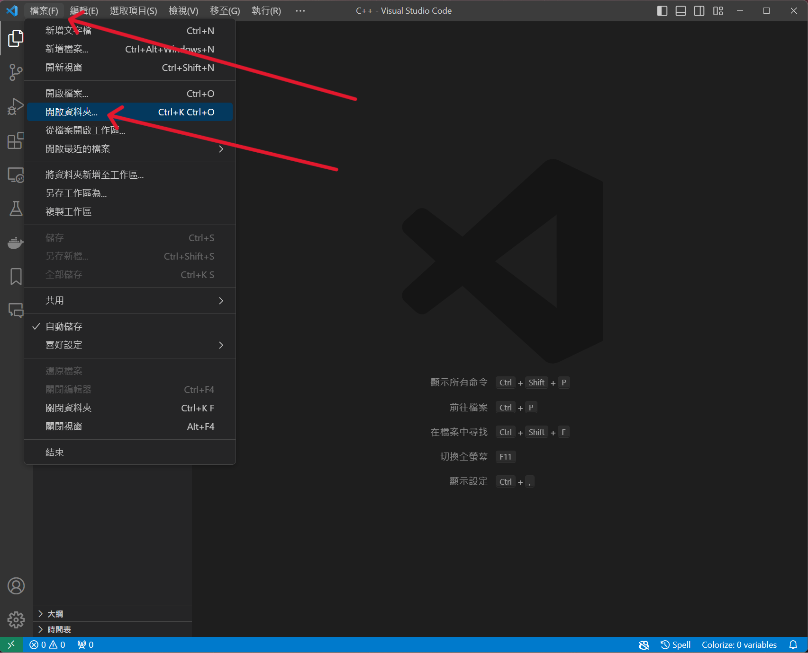
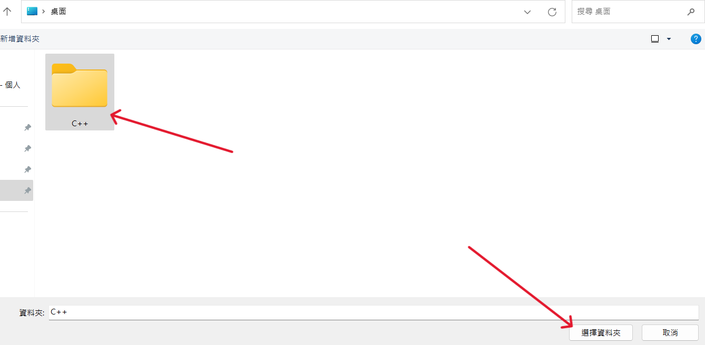
- 點擊左方 "檔案總管"資料夾名稱旁 "新增檔案"→創建一個叫做 “hello.cpp”
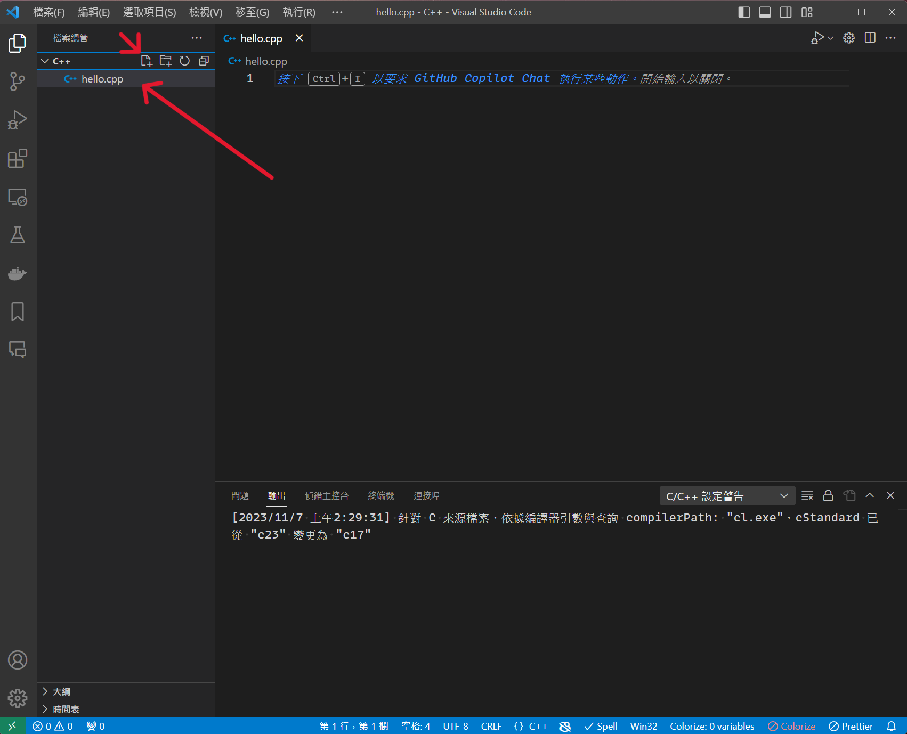
檔案格式 (File Format)
所有檔案都會有"檔案格式"，指電腦爲了儲存資訊而使用的對資訊的特殊編碼方式，是用於辨識內部儲存的資料。
- 例如:
- Word是 ".docx"
- 圖片有 ".png"、 ".pdf"、 ".jpg"
- C++的檔案類型則是 ".cpp"
- 將以下程式碼打在剛剛創立的檔案中:
1 |
|
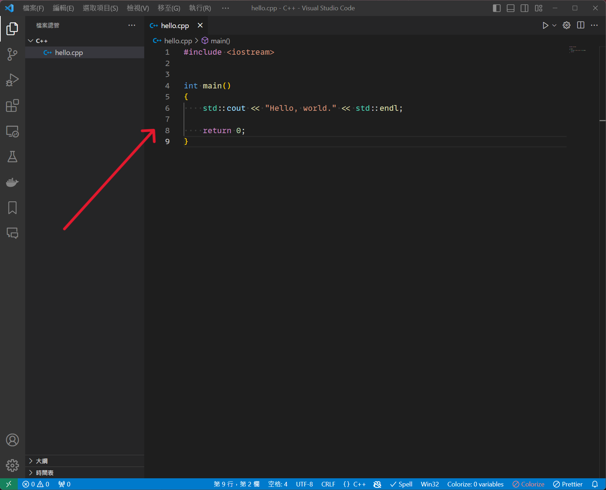
- 點擊上方 "終端機"→ "新增終端"→下方視窗確認右上角為 “cmd”、路徑為你剛剛創建資料夾的路徑
(如果剛剛資料夾是創建在桌面會是C:\Users\User\Desktop\<資料夾名稱>)
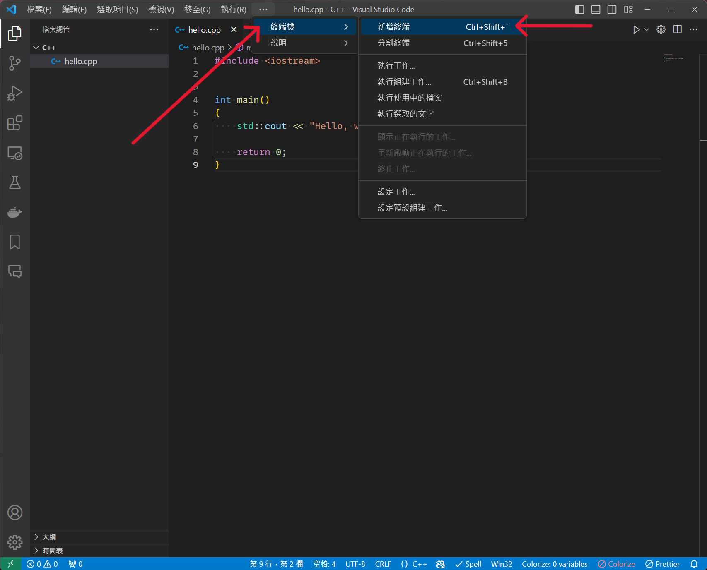
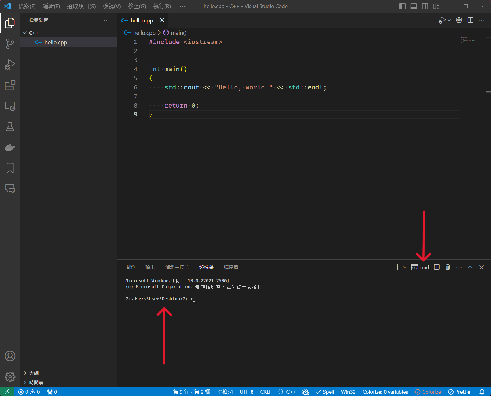
- 在終端打
g++ hello.cpp -o hello.exe→按Enter執行這段指令→左上角會出現一個 "hello.exe"的可執行檔。確認有 "hello.exe"檔案→在終端打 "hello.exe"→按Enter執行→終端會出現 “Hello, world.”。
(沒意外的話，一切會順利執行。在正式啟航後會解釋這些指令功用與目的。)
(PS. 如果失敗的話，請在底下留言，或IG私訊我詢問)
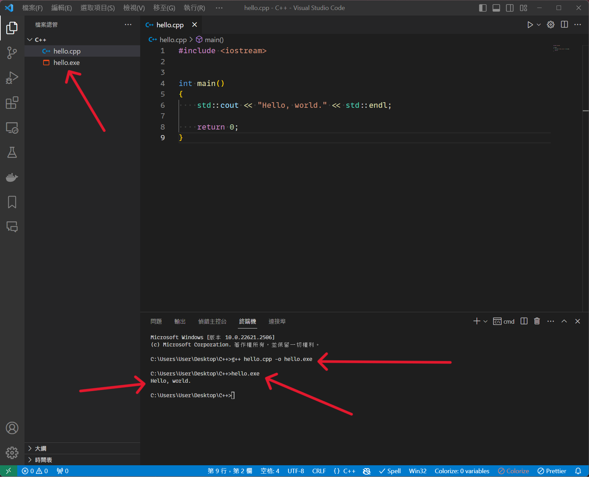
結語
恭喜您走到這一步，已經完成了前進之路的一半😀！接下來的一半需要您擁有一顆「勇敢面對挑戰的心」以及「絕不輕言放棄的毅力」。為什麼會這麼說呢？學習程式的曲線有其特殊之處，請參考以下圖表。

我個人也是初學者，目前仍處於「牽手蜜月期」(Hand-Holding Honeymoon)，因此無法自認有足夠資格詮釋這一切。在您踏上程式之旅之前，我強烈建議您閱讀以下三篇文章，以便為未來可能遭遇的情況做好心理準備。
如果您閱讀完這些文章後開始對自己產生一些自我懷疑，例如
- 我不是本科生耶，我可以學程式嗎😥?
- 我英文、數學不好…應該沒辦法學吧🥺?
- 我已經三十幾歲了，現在轉職會不會太晚😭？
請不要擔心，每個人都具有學習程式的潛力，實際上，這也適用於任何其他知識領域。即使您不是本科生（就像我一樣），您可能需要額外的時間來穩固基本知識和蒐集資料。英文和數學能力雖然在追求更高競爭力的目標中很重要，但它們對於「開始學習程式」並不是絕對必要的技能。在網上有大量免費的中文資源可供參考，而在初學階段，數學並不是必要的技能。最後，年齡絕對不是限制，無論您年齡是30、40，甚至80，只要您充滿熱情和意願，都有能力學習。如果您仍然感到不安，我建議閱讀以下兩篇文章：
好了，話說得有些多了，這篇篇幅有點長，非常感謝各位閱讀到此。讓我們為下一步正式啟航做好準備吧😆！